Narita, Chiba: things to do, food and stays
Narita · Chiba
Narita
Highlighted on the Chiba map.
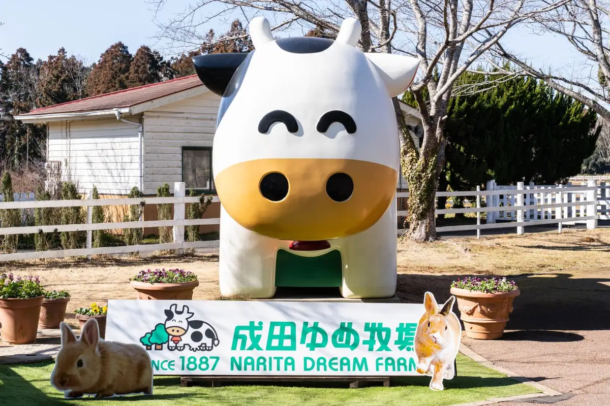
Stay
和空 成田山門前
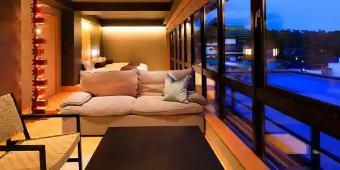
Waku Narita Yamato Mae
リッチモンドホテル成田
Ritchimondo Hotel Narita
ホテル日航成田
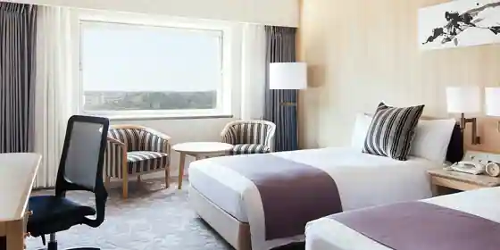
Hotel Nikko Narita
ホテルマイステイズプレミア成田
Hotel Maisuteizupuremia Narita
Hotel in Oyama, Narita with a sauna.
成田東武ホテルエアポート
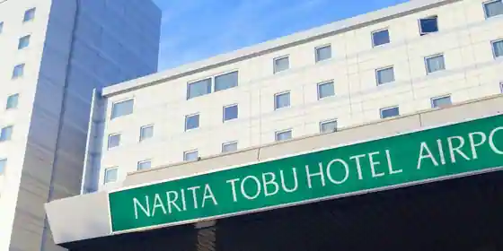
Narita Tobu Hotel Eapoto
ホテルウェルコ成田
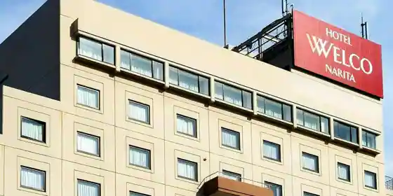
Hotel Ueruko Narita
ザ エディスターホテル成田
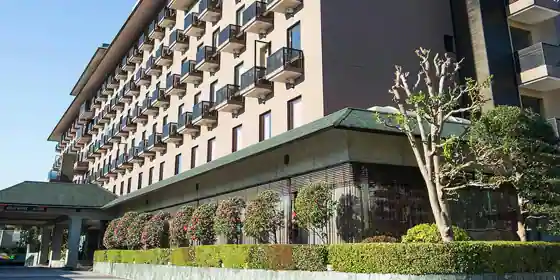
Za Edisuta Hotel Narita
成田ゲートウェイホテル
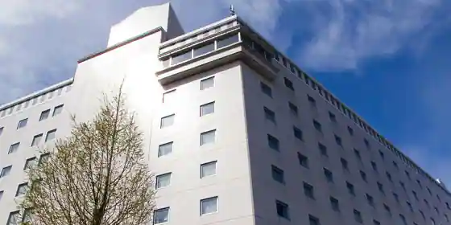
Narita Getouei Hotel
アートホテル成田
Ato Hotel Narita
コンフォートホテル成田
Comfort Hotel Narita
Hotel in Hanasaki, Narita; 2-minute walk from Keiseinarita Station.
アパホテル〈京成成田駅前〉
APA Hotel < Keiseinarita Ekimae >
Hackberry Holiday Home
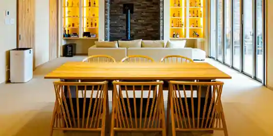
Hackberry Holiday Home
Inn in Nakano, Narita with one group per day.
Dining
麺や 福一
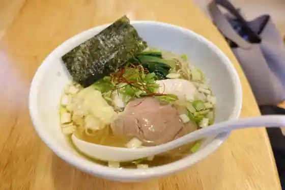
Men Ya Fukuichi
ピッツェリア ポジターノ
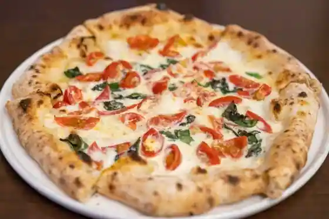
Pizzeria Pojitano
らあめん クローバー
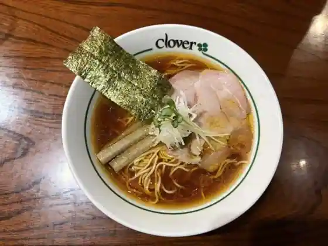
Ramen Kuroba
ピッツェリア・エ・バール・レガーメ
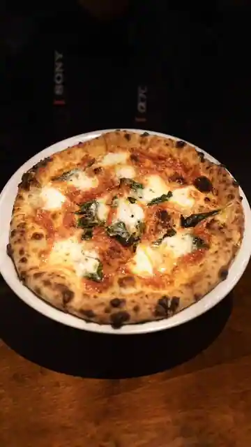
Pizzeria E Baru Regame
金時の甘太郎焼
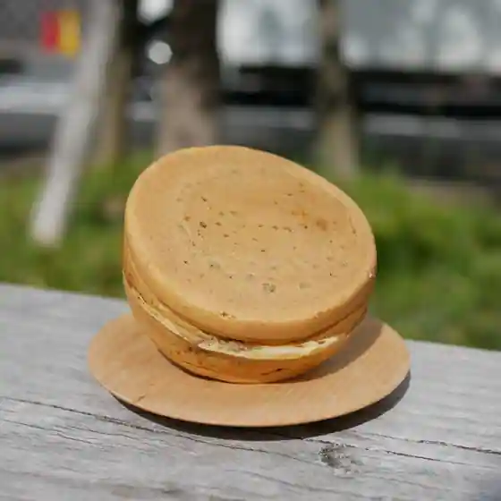
Kintoki No Kantaro Yaki
川豊 本店
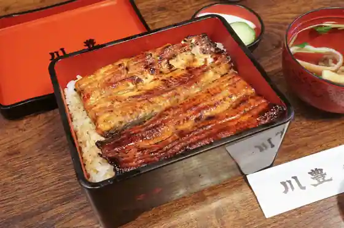
Kawa Yutaka Hon
川豊 成田空港店
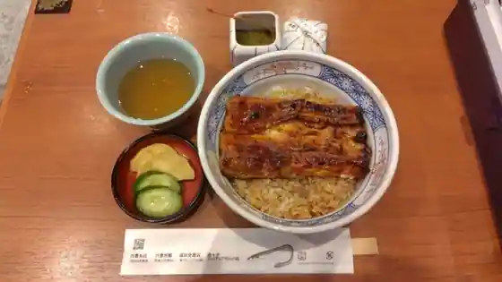
Kawa Yutaka Naritakuko
ハラール ドーサ ビリヤニ
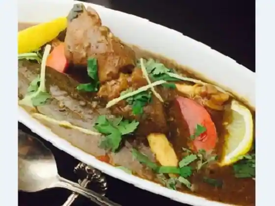
Hararu Dosa Biriyani
鳥半・魚半
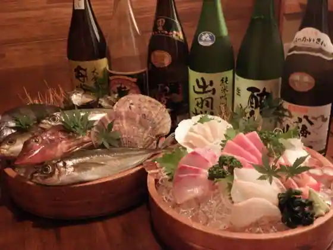
Tori Han Uohan
テコテコ
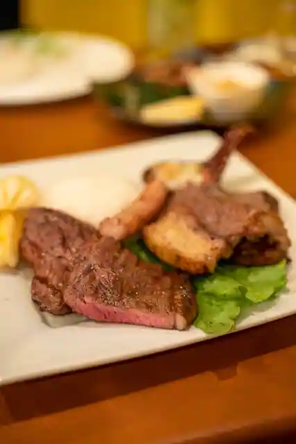
Tekoteko
松戸 富田麺旦
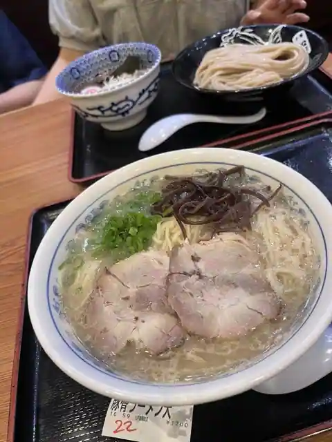
Matsudo Tomita Men Tan
川豊別館
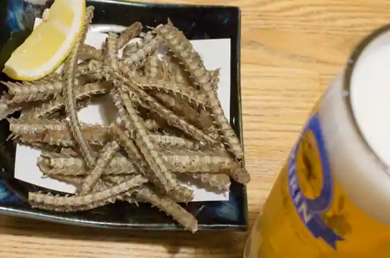
Kawa Yutaka Bekkan
又兵衛 船形店
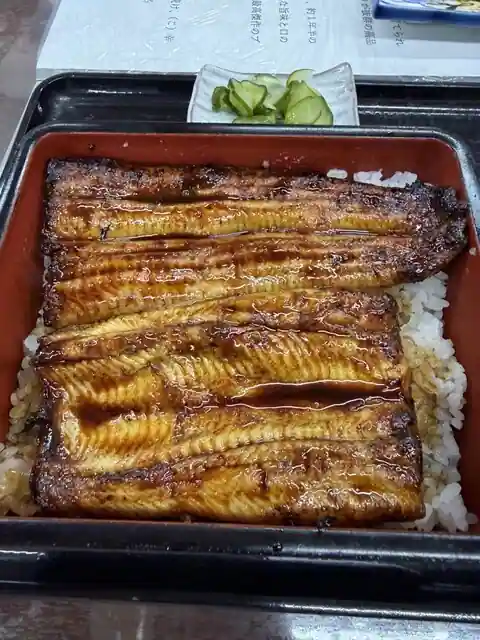
Matabe Funagata
十割手打ち蕎麦 成田・虎智庵
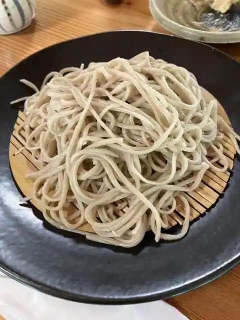
Ju Wari Teuchi Chi Soba Narita Tora Satoru Iori
三芳家
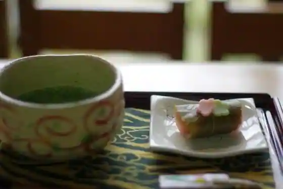
Miyoshi Ie
台湾料理 鼎
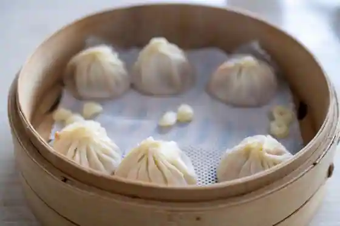
Taiwan Ryori Kanae
名鳥
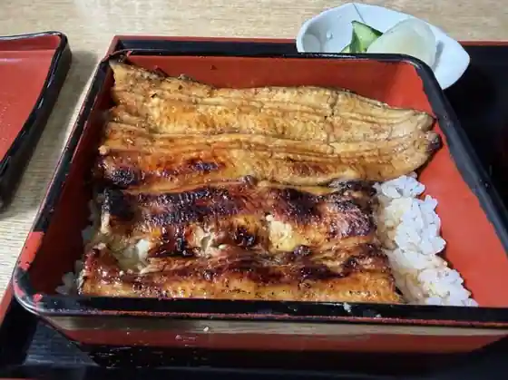
Meicho
鶏の骨
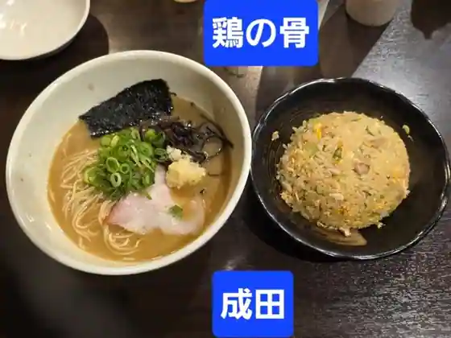
Niwatori No Hone
名取亭
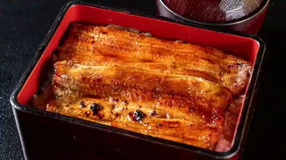
Natori Tei
夢香台 駿河屋
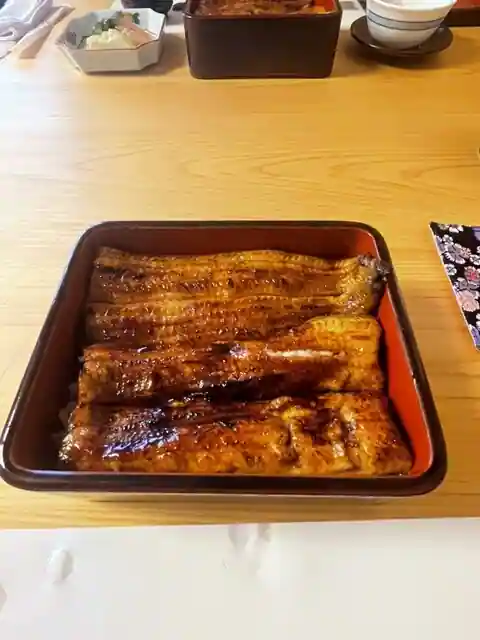
Yumeka Dai Surugaya
割烹 やま田
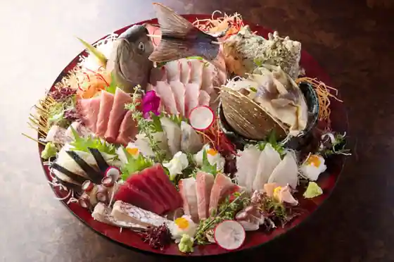
Kappo Yama Ta
川豊西口館
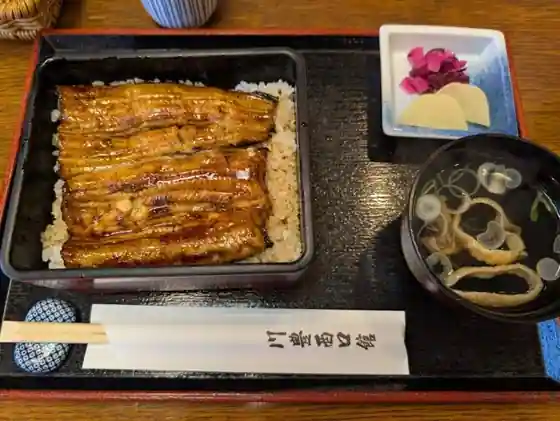
Kawa Yutaka Nishiguchi Kan
うなぎ新川 本店
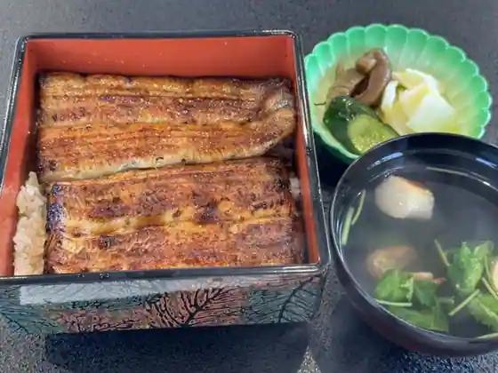
Unagi Shinkawa Hon
後藤だんご屋
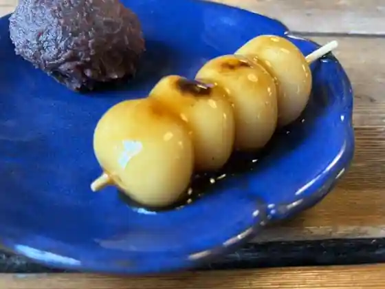
Goto Dango Ya
Sights
Narita Yume Ranch
Narita Yama Shinsho Tera
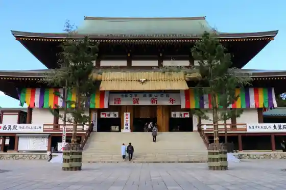
Narita Sakura no Yama
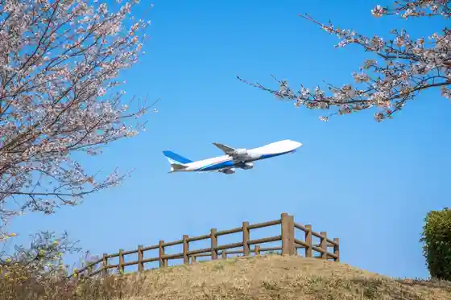
Narita Airport
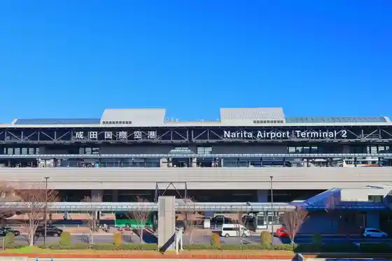
Narita Yama Park
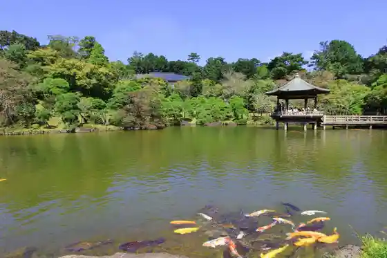
Sogo Rei Do
Narita Farm Land
Sakatagaike General Park
Shinsei Narita Ba (Narita Kosetsu Chiho Oroshiuri Market)
Narita Kanko Kan
Sora no Eki Sakura Kan
Sanrizuka Goryobokujo Memorial Museum
JAL Agriport
Atsuta Farm
Narita Yama Shodo Art Museum
DINING PORT Goryo Tsuru
Sho Mikado Shrine
Ko Tsu no Mori Komyunitei Center (Morinpiakozu)
Chiba Marushie Sora no Eki
Daiei Sanchoku Center
Shimosa Folk History Museum
Karakuri Tokei
Chokubai Hausu Village Tokei